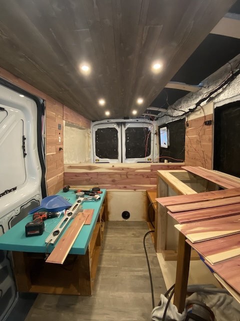
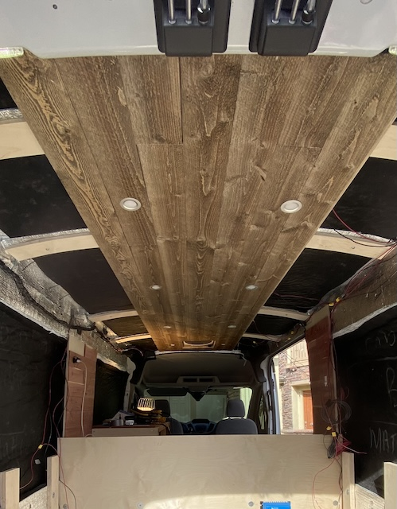
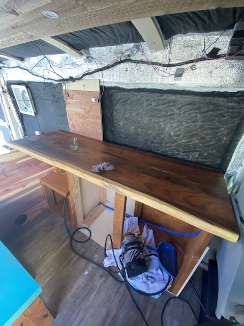
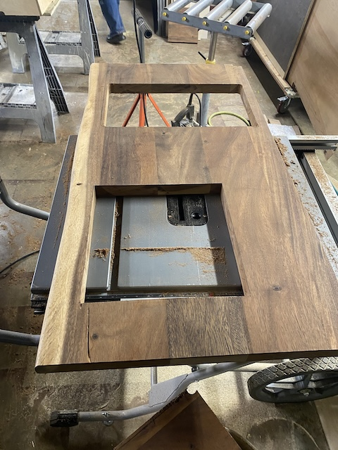
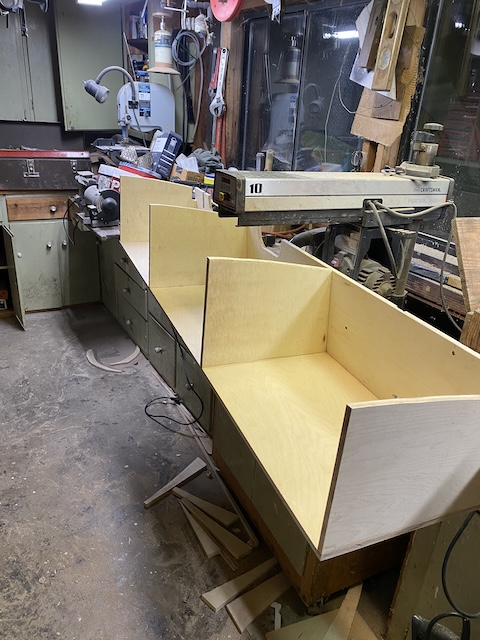
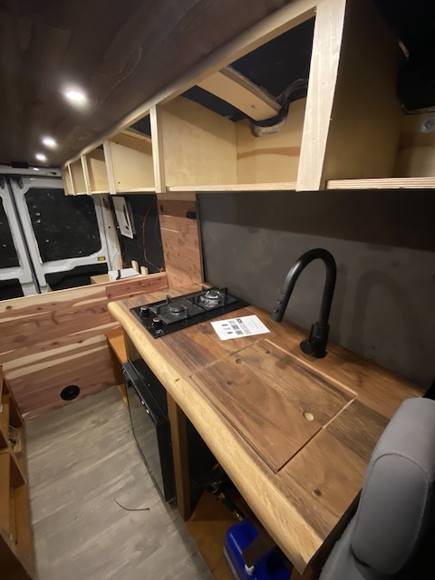
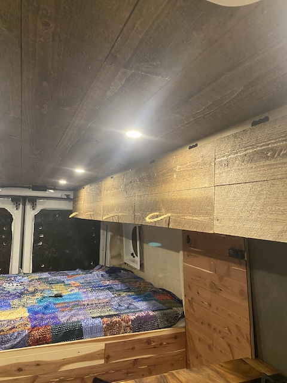

Woodwork
The woodwork stage was when the van started to feel like a real home. I used natural wood throughout to bring warmth and a cabin-like atmosphere. Every piece was cut, fit, and installed by hand to match the van's curved interior.
Materials Used
| Material | Specification | Purpose |
|---|---|---|
| Tongue and Groove Cedar | 1/8 inch boards | Wall paneling for warmth and scent |
| Tongue and Groove Pine | 3/4 inch boards | Ceiling paneling |
| Live Edge Slab | Solid cedar | Kitchen countertop |
| Custom Hanging Cabinets | Birch plywood and pine trim | Overhead storage |
Wall Paneling
I used tongue-and-groove cedar boards for the walls. They lock together cleanly and give off a warm, natural scent inside the van. Each piece was cut to fit the wall, then fastened with nails into wooden furring strips.
Ceiling
The ceiling is built from thin tongue-and-groove pine boards. They’re lightweight and create a cozy, finished look. Their natural look was already in place when I bought them.
Countertop
The countertop is a live-edge cedar slab I sanded, oiled, and sealed with polyurethane. The natural shape of the wood gives it a rustic look that flows well with the rest of the van.
 Cabinets & Storage
I built custom hanging cabinets above the kitchen and bed area for extra storage. They’re made from lightweight birch plywood with pine trim and secured to the van’s ribs for strength. For the outer facing side of the cabinet I used the same wood that I used on the ceiling to have a nice transition from ceiling to wall.
  